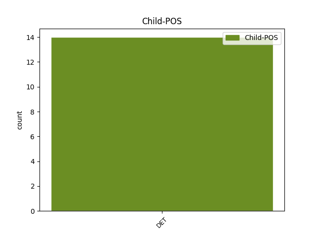

Distribution of features within this leaf

Agreement Rules sorted by frequency.
- When the dependent token is the determiner(det) of the head token, and the head token is VERB
1 Εδώ _ _ _ _ 0 _ _ _
2 οφείλω _ _ _ _ 0 _ _ _
3 να _ _ _ _ 0 _ _ _
4 εξηγήσω _ _ _ _ 0 _ _ _
5 , _ _ _ _ 0 _ _ _
6 εξ _ _ _ _ 0 _ _ _
7 ονόματος _ _ _ _ 0 _ _ _
8 της _ _ _ _ 0 _ _ _
9 Επιτροπής _ _ _ _ 0 _ _ _
10 , _ _ _ _ 0 _ _ _
11 ότι _ _ _ _ 0 _ _ _
12 από _ _ _ _ 0 _ _ _
13 τη _ _ _ _ 0 _ _ _
14 δική _ _ _ _ 0 _ _ _
15 μας _ _ _ _ 0 _ _ _
16 πλευρά _ _ _ _ 0 _ _ _
17 δεν _ _ _ _ 0 _ _ _
18 μπορούμε _ _ _ _ 0 _ _ _
19 να _ _ _ _ 0 _ _ _
20 ορίσουμε _ _ _ _ 0 _ _ _
21 πότε _ _ _ _ 0 _ _ _
22 θα _ _ _ _ 0 _ _ _
23 γίνει _ _ _ _ 0 _ _ _
24 η _ _ _ _ 0 _ _ _
25 θετική _ _ _ _ 0 _ _ _
26 δήλωση _ _ _ _ 0 _ _ _
27 αξιοπιστίας _ _ _ _ 0 _ _ _
28 και _ _ _ _ 0 _ _ _
29 για _ _ _ _ 0 _ _ _
30 την _ _ _ _ 0 _ _ _
31 ταμειακή _ _ _ _ 0 _ _ _
32 διαχείριση _ _ _ _ 0 _ _ _
33 , _ _ _ _ 0 _ _ _
34 διότι _ _ _ _ 0 _ _ _
35 η _ _ _ _ 0 _ _ _
36 απόφαση _ _ _ _ 0 _ _ _
37 αυτή _ _ _ _ 0 _ _ _
38 είναι _ _ _ _ 0 _ _ _
39 υπόθεση _ _ _ _ 0 _ _ _
40 του _ _ _ _ 0 _ _ _
41 Ελεγκτικού _ _ _ _ 0 _ _ _
42 Συνεδρίου _ _ _ _ 0 _ _ _
43 , _ _ _ _ 0 _ _ _
44 το _ _ _ _ 0 _ _ _
45 οποίο _ _ _ _ 0 _ _ _
46 από _ _ _ _ 0 _ _ _
47 την _ _ _ _ 0 _ _ _
48 πλευρά _ _ _ _ 0 _ _ _
49 του _ _ _ _ 0 _ _ _
50 δεν _ _ _ _ 0 _ _ _
51 έχει _ _ _ _ 0 _ _ _
52 θέσει _ _ _ _ 0 _ _ _
53 κάποιο _ _ _ _ 0 _ _ _
54 σημείο _ _ _ _ 0 _ _ _
55 αναφοράς _ _ _ _ 0 _ _ _
56 σχετικά _ _ _ _ 0 _ _ _
57 με _ _ _ _ 0 _ _ _
58 το ο DET DET Case=Acc|Definite=Def|Gender=Neut|Number=Sing|PronType=Art 61 det _ _
59 πότε _ _ _ _ 0 _ _ _
60 θα _ _ _ _ 0 _ _ _
61 χορηγείται χορηγώ VERB VERB Aspect=Imp|Mood=Ind|Number=Sing|Person=3|Tense=Pres|VerbForm=Fin|Voice=Pass 0 _ _ _
62 η _ _ _ _ 0 _ _ _
63 δήλωση _ _ _ _ 0 _ _ _
64 αξιοπιστίας _ _ _ _ 0 _ _ _
65 . _ _ _ _ 0 _ _ _
Disagree Examples:
1 Μιλήστε _ _ _ _ 0 _ _ _
2 μαζί _ _ _ _ 0 _ _ _
3 μας _ _ _ _ 0 _ _ _
4 , _ _ _ _ 0 _ _ _
5 σπείρετε _ _ _ _ 0 _ _ _
6 και _ _ _ _ 0 _ _ _
7 καλλιεργείστε _ _ _ _ 0 _ _ _
8 , _ _ _ _ 0 _ _ _
9 εκτός _ _ _ _ 0 _ _ _
10 από _ _ _ _ 0 _ _ _
11 το ο DET DET Case=Acc|Definite=Def|Gender=Neut|Number=Sing|PronType=Art 13 det _ _
12 να _ _ _ _ 0 _ _ _
13 θερίζετε θερίζω VERB VERB Aspect=Imp|Mood=Ind|Number=Plur|Person=2|Tense=Pres|VerbForm=Fin|Voice=Act 0 _ _ _
14 . _ _ _ _ 0 _ _ _
15 ( _ _ _ _ 0 _ _ _
16 Χειροκροτήματα _ _ _ _ 0 _ _ _
17 ) _ _ _ _ 0 _ _ _
1 Δεν _ _ _ _ 0 _ _ _
2 υπάρχει _ _ _ _ 0 _ _ _
3 νόημα _ _ _ _ 0 _ _ _
4 σ _ _ _ _ 0 _ _ _
5 το ο DET AtDf Case=Acc|Gender=Neut|Number=Sing 7 det _ _
6 να _ _ _ _ 0 _ _ _
7 πούμε λέγω VERB VERB Aspect=Perf|Mood=Ind|Number=Plur|Person=1|VerbForm=Fin|Voice=Act 0 _ _ _
8 ότι _ _ _ _ 0 _ _ _
9 πρέπει _ _ _ _ 0 _ _ _
10 να _ _ _ _ 0 _ _ _
11 χρησιμοποιούμε _ _ _ _ 0 _ _ _
12 το _ _ _ _ 0 _ _ _
13 δημόσιο _ _ _ _ 0 _ _ _
14 χρήμα _ _ _ _ 0 _ _ _
15 απλώς _ _ _ _ 0 _ _ _
16 και _ _ _ _ 0 _ _ _
17 μόνο _ _ _ _ 0 _ _ _
18 για _ _ _ _ 0 _ _ _
19 να _ _ _ _ 0 _ _ _
20 υποστηρίζουμε _ _ _ _ 0 _ _ _
21 ένα _ _ _ _ 0 _ _ _
22 αποτυχημένο _ _ _ _ 0 _ _ _
23 ή _ _ _ _ 0 _ _ _
24 απηρχαιωμένο _ _ _ _ 0 _ _ _
25 σύστημα _ _ _ _ 0 _ _ _
26 . _ _ _ _ 0 _ _ _
1 Αξιότιμε _ _ _ _ 0 _ _ _
2 κύριε _ _ _ _ 0 _ _ _
3 Πρόεδρε _ _ _ _ 0 _ _ _
4 , _ _ _ _ 0 _ _ _
5 κυρία _ _ _ _ 0 _ _ _
6 Επίτροπε _ _ _ _ 0 _ _ _
7 , _ _ _ _ 0 _ _ _
8 αξιότιμοι _ _ _ _ 0 _ _ _
9 συνάδελφοι _ _ _ _ 0 _ _ _
10 , _ _ _ _ 0 _ _ _
11 η _ _ _ _ 0 _ _ _
12 ελευθέρωση _ _ _ _ 0 _ _ _
13 των _ _ _ _ 0 _ _ _
14 οδικών _ _ _ _ 0 _ _ _
15 μεταφορών _ _ _ _ 0 _ _ _
16 αναμφίβολα _ _ _ _ 0 _ _ _
17 οδήγησε _ _ _ _ 0 _ _ _
18 σ _ _ _ _ 0 _ _ _
19 το ο DET AtDf Case=Acc|Gender=Neut|Number=Sing 21 det _ _
20 να _ _ _ _ 0 _ _ _
21 έχουμε έχω VERB VERB Aspect=Imp|Mood=Ind|Number=Plur|Person=1|Tense=Pres|VerbForm=Fin|Voice=Act 0 _ _ _
22 σ _ _ _ _ 0 _ _ _
23 την _ _ _ _ 0 _ _ _
24 Ευρώπη _ _ _ _ 0 _ _ _
25 καλύτερη _ _ _ _ 0 _ _ _
26 προσφορά _ _ _ _ 0 _ _ _
27 και _ _ _ _ 0 _ _ _
28 καλύτερες _ _ _ _ 0 _ _ _
29 τιμές _ _ _ _ 0 _ _ _
30 . _ _ _ _ 0 _ _ _
1 Οι _ _ _ _ 0 _ _ _
2 ίδιοι _ _ _ _ 0 _ _ _
3 λένε _ _ _ _ 0 _ _ _
4 ότι _ _ _ _ 0 _ _ _
5 κανείς _ _ _ _ 0 _ _ _
6 δεν _ _ _ _ 0 _ _ _
7 πρόκειται _ _ _ _ 0 _ _ _
8 να _ _ _ _ 0 _ _ _
9 τους _ _ _ _ 0 _ _ _
10 εμποδίσει _ _ _ _ 0 _ _ _
11 από _ _ _ _ 0 _ _ _
12 το ο DET DET Case=Acc|Definite=Def|Gender=Neut|Number=Sing|PronType=Art 13 det _ _
13 ξανακτίσουν ξανακτίζω VERB VERB Aspect=Perf|Mood=Ind|Number=Plur|Person=3|VerbForm=Fin|Voice=Act 0 _ _ _
14 τη _ _ _ _ 0 _ _ _
15 ζωή _ _ _ _ 0 _ _ _
16 τους _ _ _ _ 0 _ _ _
17 σ _ _ _ _ 0 _ _ _
18 την _ _ _ _ 0 _ _ _
19 Κριμαία _ _ _ _ 0 _ _ _
20 , _ _ _ _ 0 _ _ _
21 ανεξάρτητα _ _ _ _ 0 _ _ _
22 από _ _ _ _ 0 _ _ _
23 την _ _ _ _ 0 _ _ _
24 πολιτική _ _ _ _ 0 _ _ _
25 και _ _ _ _ 0 _ _ _
26 στρατιωτική _ _ _ _ 0 _ _ _
27 θύελλα _ _ _ _ 0 _ _ _
28 που _ _ _ _ 0 _ _ _
29 απειλεί _ _ _ _ 0 _ _ _
30 την _ _ _ _ 0 _ _ _
31 περιοχή _ _ _ _ 0 _ _ _
32 . _ _ _ _ 0 _ _ _
1 Κύριε _ _ _ _ 0 _ _ _
2 Πρόεδρε _ _ _ _ 0 _ _ _
3 , _ _ _ _ 0 _ _ _
4 σας _ _ _ _ 0 _ _ _
5 είμαι _ _ _ _ 0 _ _ _
6 εξαιρετικά _ _ _ _ 0 _ _ _
7 ευγνώμων _ _ _ _ 0 _ _ _
8 για _ _ _ _ 0 _ _ _
9 το ο DET DET Case=Acc|Definite=Def|Gender=Neut|Number=Sing|PronType=Art 11 det _ _
10 ότι _ _ _ _ 0 _ _ _
11 ταχθήκατε τάσσω VERB VERB Aspect=Perf|Mood=Ind|Number=Plur|Person=2|Tense=Past|VerbForm=Fin|Voice=Pass 0 _ _ _
12 υπέρ _ _ _ _ 0 _ _ _
13 της _ _ _ _ 0 _ _ _
14 πρότασης _ _ _ _ 0 _ _ _
15 να _ _ _ _ 0 _ _ _
16 προσκαλέσουμε _ _ _ _ 0 _ _ _
17 σ _ _ _ _ 0 _ _ _
18 το _ _ _ _ 0 _ _ _
19 Ευρωπαϊκό _ _ _ _ 0 _ _ _
20 Κοινοβούλιο _ _ _ _ 0 _ _ _
21 , _ _ _ _ 0 _ _ _
22 σ _ _ _ _ 0 _ _ _
23 τις _ _ _ _ 0 _ _ _
24 Ομάδες _ _ _ _ 0 _ _ _
25 μας _ _ _ _ 0 _ _ _
26 , _ _ _ _ 0 _ _ _
27 παρατηρητές _ _ _ _ 0 _ _ _
28 από _ _ _ _ 0 _ _ _
29 τις _ _ _ _ 0 _ _ _
30 υποψήφιες _ _ _ _ 0 _ _ _
31 για _ _ _ _ 0 _ _ _
32 ένταξη _ _ _ _ 0 _ _ _
33 χώρες _ _ _ _ 0 _ _ _
34 μετά _ _ _ _ 0 _ _ _
35 από _ _ _ _ 0 _ _ _
36 την _ _ _ _ 0 _ _ _
37 υπογραφή _ _ _ _ 0 _ _ _
38 των _ _ _ _ 0 _ _ _
39 συνθηκών _ _ _ _ 0 _ _ _
40 . _ _ _ _ 0 _ _ _